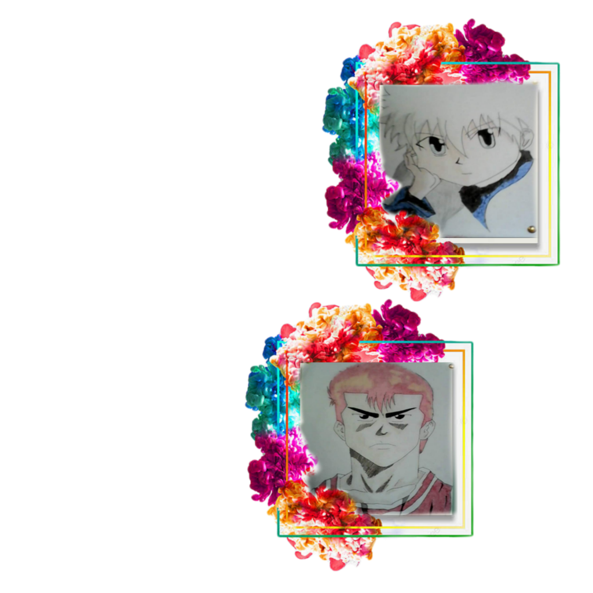
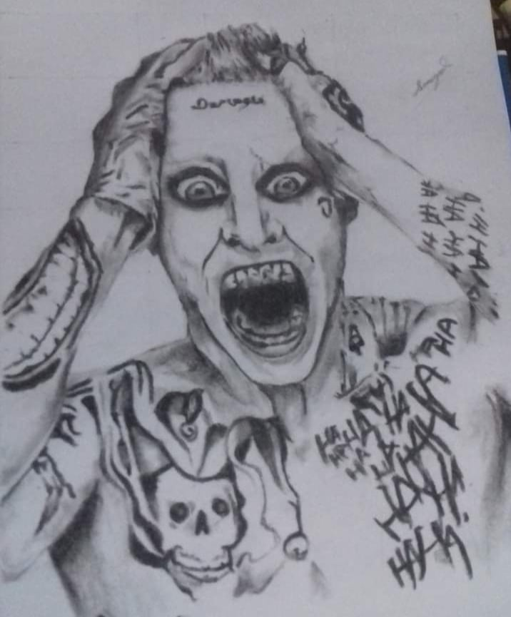
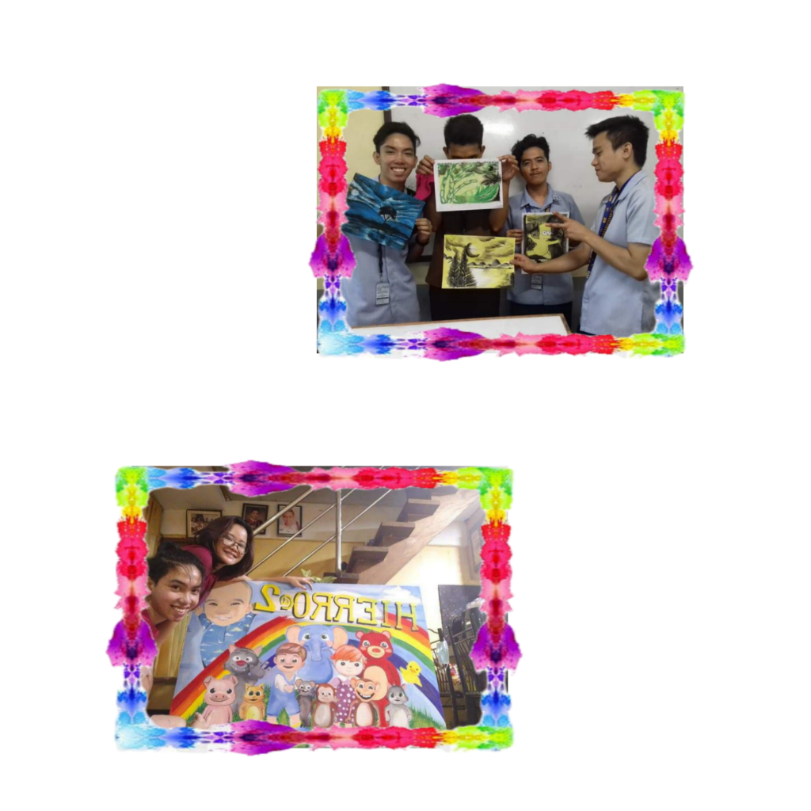
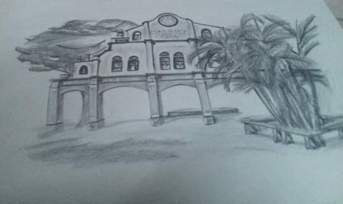
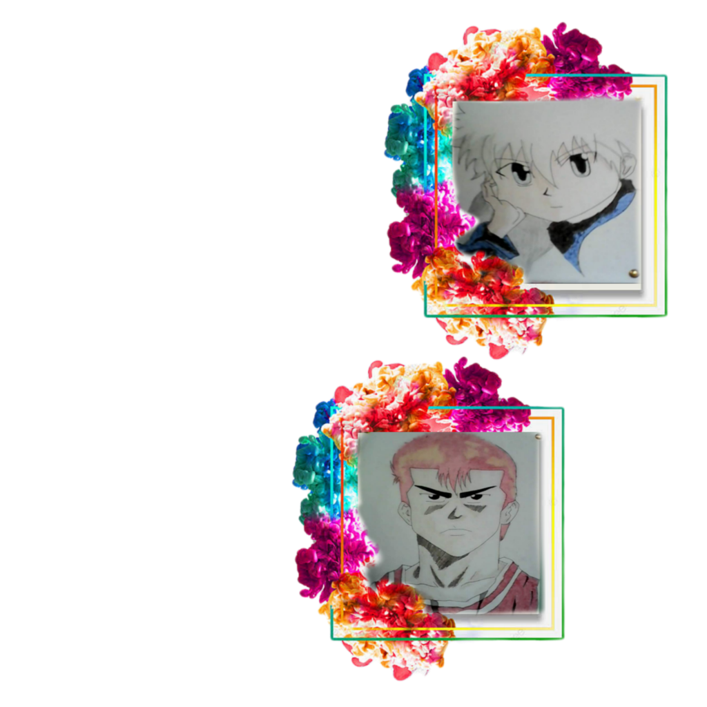
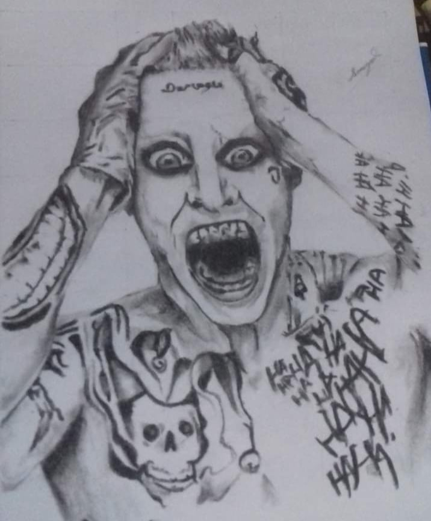
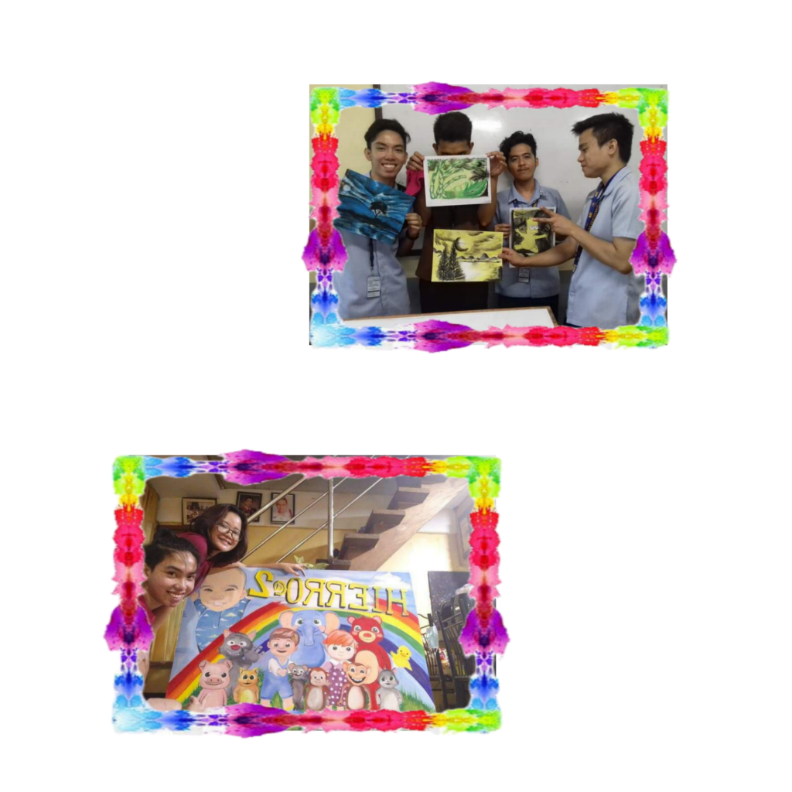
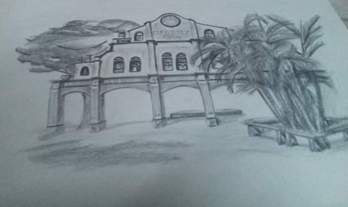

My passion for drawing started when I was a child.
I practice to draw my favorite anime characters and
every time I finish an artwork I enjoy it.
When I was in senior high school,
I became interested in making portraits.
I was inspired to draw a portrait after seeing
something on social media. I joined the 'Guhit Pinas'
group, where I learned and pursued my love of drawing.
In 2nd year of college,
I enjoyed painting when we had commercial arts
as a subject in school. Because of this,
I learned to hold a brush and paint.
I tried to draw landscape with
graphite and charcoal pencils.
I draw beautiful spots around what I see.